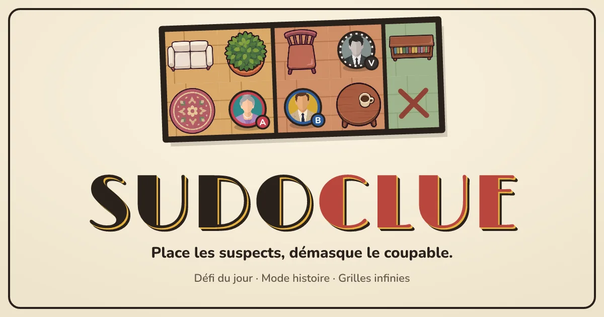
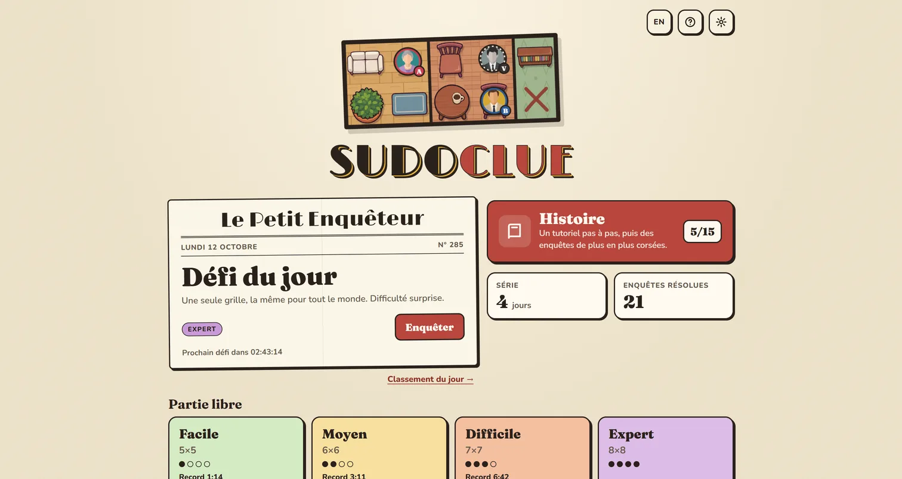
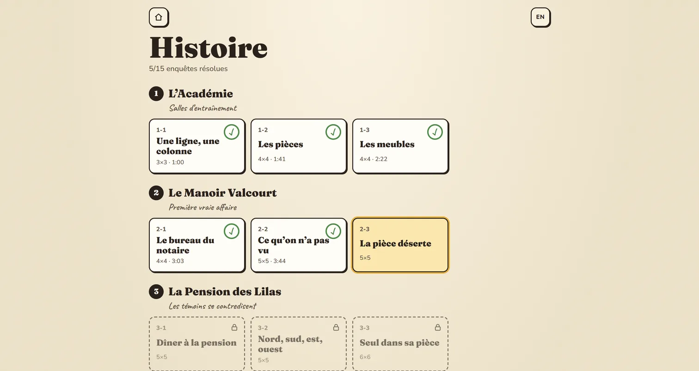
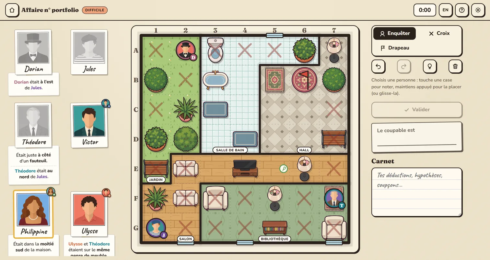
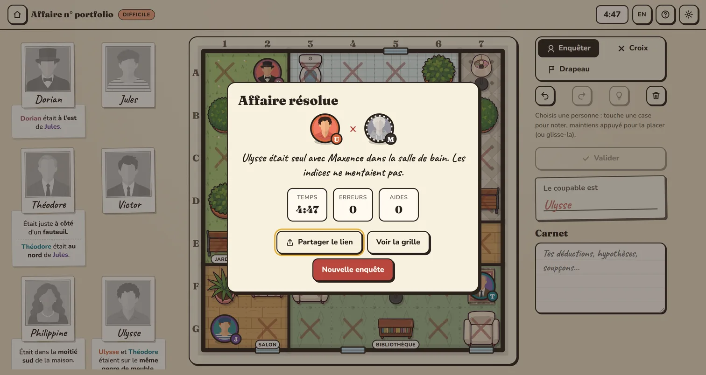
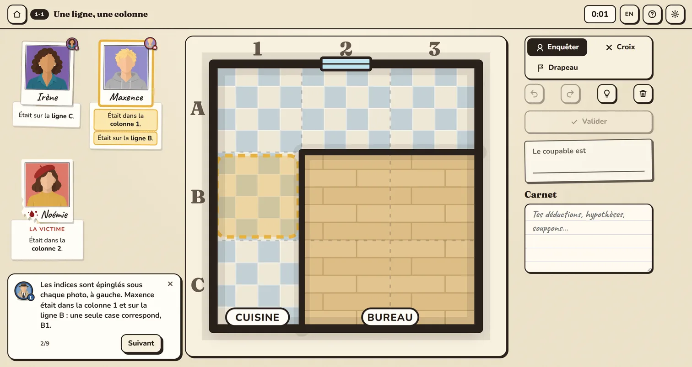
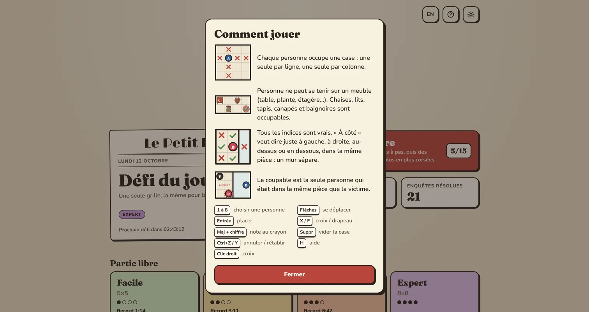

Un jeu de déduction dans le navigateur, entre sudoku et Cluedo : on place chaque personne sur le plan d'une maison grâce aux indices, puis on démasque le coupable. A deduction game in the browser, somewhere between sudoku and Cluedo: place every person on a house floor plan from the clues, then unmask the killer.

Les livres Murdoku de Manuel Garand mêlent la règle du sudoku (une personne par ligne et par colonne) à une scène de crime vue de dessus : chaque indice place un suspect près d'une plante, dans la cuisine, au nord d'un autre. Le coupable est la seule personne qui était seule avec la victime. Un livre, c'est 80 grilles. Sudoclue en génère autant qu'on veut.
Manuel Garand's Murdoku books blend the sudoku rule (one person per row and per column) with a crime scene seen from above: each clue puts a suspect next to a plant, in the kitchen, north of someone else. The culprit is the only person who was alone with the victim. A book holds 80 grids. Sudoclue makes as many as you want.
Trois façons de jouer : une partie libre en quatre difficultés, un mode histoire de 15 enquêtes qui commence par un vrai tutoriel guidé, et un défi du jour, le même pour tout le monde, avec un classement.
Three ways to play: free play across four difficulties, a 15-case story mode that opens with a proper guided tutorial, and a daily challenge, the same for everyone, with a leaderboard.


À gauche, les polaroids des suspects avec leurs indices scotchés dessous. Au centre, le plan. On choisit une personne puis on touche une case pour la noter au crayon, ou on maintient appuyé pour la placer. Croix, drapeaux, annuler à l'infini, carnet de notes : tout ce qu'on ferait avec un crayon, sans gomme.
On the left, the suspects' polaroids with their clues taped underneath. In the middle, the floor plan. Pick a person, then tap a square to pencil them in, or press and hold to place them. Crosses, flags, unlimited undo, a notebook: everything you'd do with a pencil, minus the eraser.
Le jeu aide sans tricher : des croix se posent seules sur la ligne et la colonne d'une personne placée, et un indice contredit par la grille passe en rouge. Le bouton d'aide donne trois niveaux de coup de pouce, tirés du raisonnement du solveur.
The game helps without cheating: crosses fill the row and column of a placed person by themselves, and a clue the grid contradicts turns red. The hint button gives three levels of nudge, taken from the solver's own reasoning.


Le commissaire Lebrun guide les premières enquêtes pas à pas. Il surligne les indices, les cases et les suspects concernés, et passe à l'étape suivante dès que le bon placement est fait. Les grilles grandissent ensuite de 3×3 à 8×8, et les indices deviennent plus vagues à chaque chapitre.
Superintendent Lebrun walks you through the first cases step by step. He highlights the relevant clues, squares and suspects, and moves on as soon as the right placement is made. Grids then grow from 3×3 to 8×8, and clues get vaguer with every chapter.


Un moteur sans dépendance. Le cœur est un paquet TypeScript pur, partagé par le site, les scripts et les tests : générateur, solveur exhaustif et solveur « humain ». Le premier garantit qu'une grille n'a qu'une solution. Le second ne s'autorise que des raisonnements de joueur (déduction directe, paires, croisements, hypothèse) : il note la difficulté et alimente l'aide. Une grille qu'il ne sait pas finir est rejetée.
A dependency-free engine. The core is a pure TypeScript package, shared by the site, the scripts and the tests: generator, exhaustive solver and "human" solver. The first guarantees a grid has exactly one solution. The second only allows itself player-style reasoning (direct deduction, pairs, crossings, one-step guesses): it rates the difficulty and powers the hints. A grid it can't finish gets thrown out.
Des grilles variées. Le générateur trace les pièces, meuble chaque pièce selon son type, place les personnes, puis choisit les indices parmi 26 types. Chaque type tiré devient moins probable ensuite, pour éviter cinq « était dans la cuisine » d'affilée. Tout dépend d'une graine : un lien de partie donne la même grille à tout le monde. Sur 200 graines par niveau, 100 % des grilles ont une solution unique et tombent dans la bonne difficulté.
Varied grids. The generator draws the rooms, furnishes each one by type, places the people, then picks clues among 26 kinds. Every kind drawn becomes less likely afterwards, so you don't get five "was in the kitchen" in a row. Everything hangs on a seed: a game link gives everyone the same grid. Over 200 seeds per level, 100% of grids have a unique solution and land in the right difficulty.
Un défi du jour qui ne se triche pas trop. Les défis sont générés à l'avance par une GitHub Action, avec une graine dérivée d'un secret (HMAC), et stockés dans Supabase. Le navigateur ne reçoit que la grille : la solution reste en base, derrière la Row Level Security, et des fonctions Postgres vérifient la réponse et chronomètrent la partie avec l'horloge du serveur. Les joueurs sont des utilisateurs anonymes Supabase : pas de compte, mais un classement.
A daily challenge that's hard to cheat. Challenges are generated ahead of time by a GitHub Action, from a seed derived from a secret (HMAC), and stored in Supabase. The browser only gets the grid: the solution stays in the database behind Row Level Security, and Postgres functions check the answer and time the run with the server clock. Players are Supabase anonymous users: no account, yet a leaderboard.
Le reste. React et Zustand pour l'état (annuler, sauvegarde automatique), un plateau en SVG, la génération dans un Web Worker pour ne jamais figer l'écran, une PWA installable et jouable hors ligne, français et anglais. Les meubles et les portraits ont été générés par planches puis découpés par un script maison (détourage, découpe, réduction). Le site est une image Docker (build statique servi par nginx) que Coolify reconstruit à chaque push.
The rest. React and Zustand for state (undo, autosave), an SVG board, generation in a Web Worker so the screen never freezes, an installable PWA that plays offline, French and English. Furniture and portraits were generated as sheets, then cut out by a home-made script (keying, slicing, downscaling). The site is a Docker image (a static build served by nginx) that Coolify rebuilds on every push.
# tools/gen-daily.ts, run every Monday by a GitHub Action
seed = HMAC(DAILY_SECRET, date)
{ puzzle, solution } = generate(seed, dailyDifficulty(date))
insert daily_puzzles(puzzle) # readable by players
insert daily_solutions(solution) # never leaves the databaseLe défi du jour ne peut pas être inviolable : la grille est publique, et le solveur pourrait la résoudre côté navigateur. Le serveur garde la solution et le chronomètre, ce qui suffit pour un classement amical. Pas de comptes pour l'instant : la progression vit dans le navigateur, mais les joueurs anonymes pourront être rattachés à un vrai compte sans perdre leur historique.
The daily challenge can't be airtight: the grid is public, and the solver could solve it in the browser. The server keeps the solution and the clock, which is enough for a friendly leaderboard. No accounts yet: progress lives in the browser, but anonymous players can later be linked to a real account without losing their history.